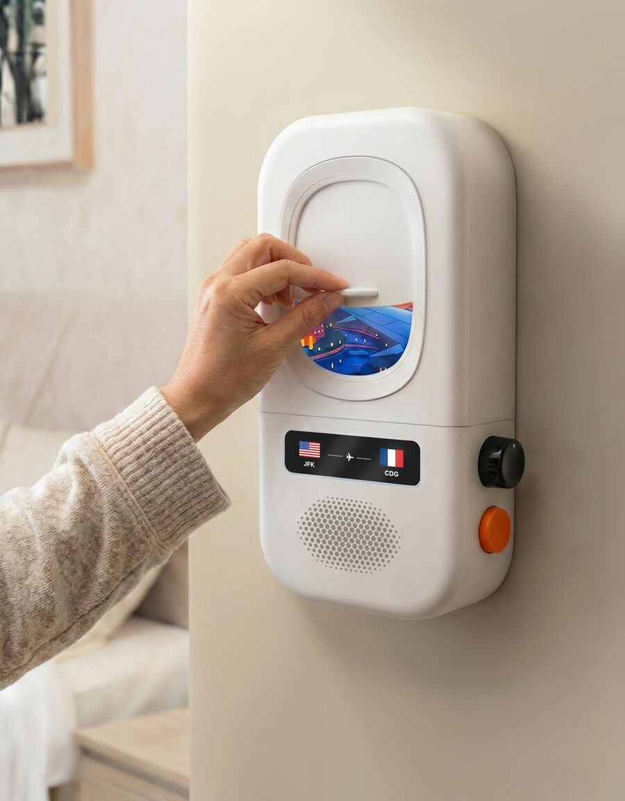

✦ ACM DIS 2026 · WIP

01 — Sleep Airline
Sleep, reimagined as a flight.
A bedside device that turns falling asleep into a takeoff ritual — replacing the anxiety of quantified sleep scores with the anticipation of a new destination.
See full case →